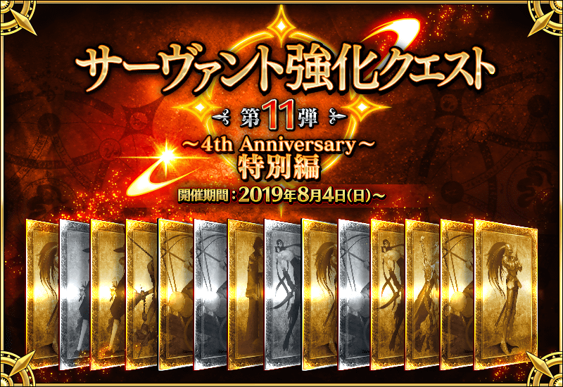
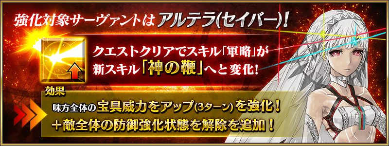
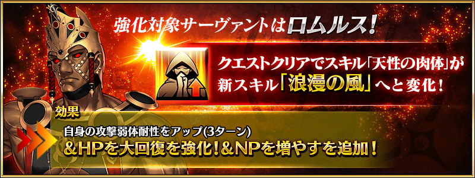
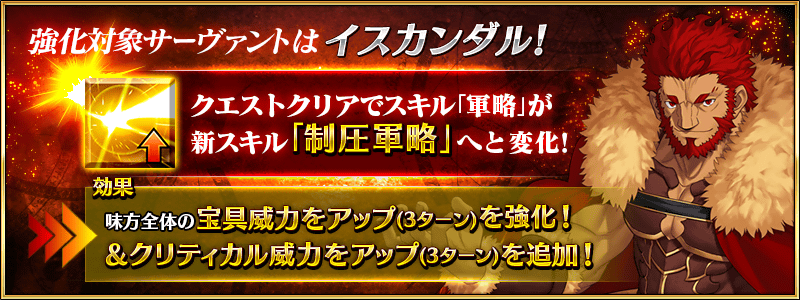
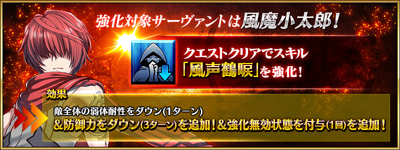
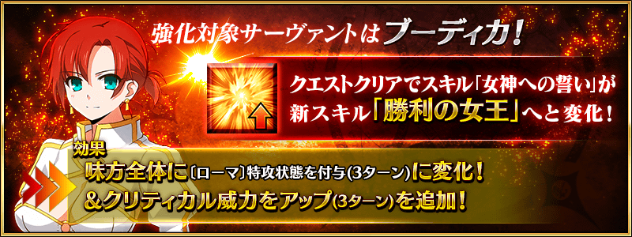
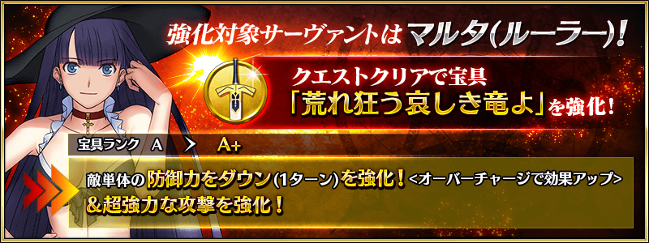
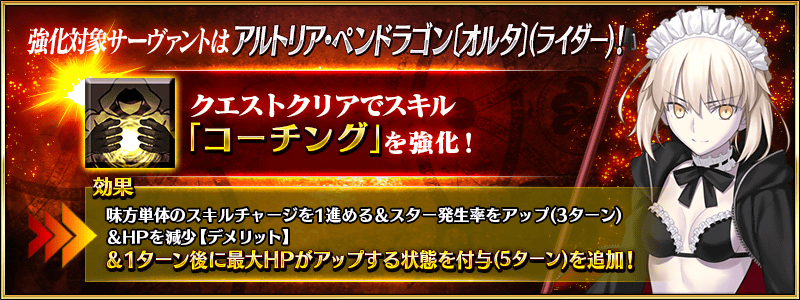

舉辦強化從者能力的特別關卡「從者強化關卡」第11彈！
本次為了記念「Fate/Grand Order Fes. 2019 ～4th Anniversary～」的舉辦，共計14位從者的強化關卡做為恆常追加！
1天各2位，連續7天合計14個關卡在迦勒底之門開放。
不僅進行對象從者的強化，也可獲得聖晶石做為關卡通過報酬。
※請注意在從者強化關卡沒有文字冒險部份。
◆追加時間◆
2019年8月4日(日) 18:00～
◆開放條件◆
持有的強化對象從者，必須使其最終再臨。
※未持有對象從者的話，不會出現關卡。
※關卡沒有舉辦期限。
◆有關從者真名的注意◆
在2018年12月31日(二) 23:00以後新配信的主線故事及期間限定活動、一部份關卡、宣傳活動及召喚中，會顯示隱藏真名的對象從者真名。
※已經配信的主線故事、復刻活動、一部份關卡中不在此限。















其他還有，進行特別連續登入獎勵和所有每日關卡的AP消耗1/2等的「Fate/Grand Order Fes. 2019 ～4th Anniversary～」舉辦中！
關於詳情，請自下述橫幅確認。
■「Fate/Grand Order Fes. 2019 ～4th Anniversary～」詳細情報